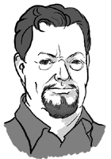
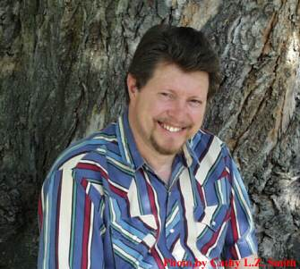

You are here: Webley Page > Who Is L. Neil Smith?
Who Is
L. Neil Smith?
Drawing of L. Neil Smith by Scott Bieser
Photo by Cathy L.Z. SmithRobert A. Heinlein had a profound influence
Author of The Covenant of Unanamous Consent
A short bio of L. Neil Smith:L. Neil Smith was born in Denver, Colorado on May 12th, 1946. His father was in the Air Force, so he grew up all over the North America in places like Waco, McQueenie, and La Porte, Texas; Salina, Kansas; Sacramento, California; and Gifford, Illinois -- all before he was in 5th grade -- and then St. John's, Newfoundland and Ft. Walton Beach, Florida where he graduated from high school.
Along the way, Neil acquired a deep interest in science and history, and studied Latin and German. He began shooting when he was around 11 years old, through a joint program of the National Rifle Association and the Boy Scouts of America. Ultimately, he won the rank of Eagle Scout and "more sharpshooter bars than I can remember".
Music -- primarily guitar and banjo -- has always been a large part of Neil's life. (Lyrics to several of his songs may be found in his novel The WarDove.) In high school and college, he led a number of small groups and bands including the Shady Grove Singers, The Roughriders, and the Original Beautiful Dreamer Marching Jug Band. His first "real" job was as a banjo player at a Shakey's pizza parlor.
Greatly preferring science fiction to anything else, Neil's boyhood favorites were Arthur Clarke, Theodore Sturgeon, Isaac Asimov, Richard Wilson, Robert Scheckley, and of course, Robert Heinlein. It was through his interest in science fiction that he encountered the works of Ayn Rand in 1961, when he read Anthem, The Fountainhead, and Atlas Shrugged and knew he had found the worldview that would guide him the rest of his life. He also recognized the unique way the ideas of Rand and Heinlein compliment each other, and it was this direction he began to take philosophically and politically.
Neil joined the Libertarian Party in 1972 (serving on the national platform committee in 1977 and 1979) and became a life member of the NRA in 1974. It was in 1972 that he met the great libertarian teacher Robert LeFevre. In 1977, frustrated by the course American politics was taking, Neil began work on a highly polemic science fiction novel, originally titled The Constitution Conspiracy, which he hoped would do the same thing for libertarianism that Harriet Beecher Stowe's Uncle Tom's Cabin did for Abolitionism or Edward Bellamy's Looking Backward and the works of H.G. Wells did for socialism.
That novel was published in December of 1979, by Random House, the first publisher that read it, under the more familiar title The Probability Broach. It was the first of 21 L. Neil Smith books (so far), including The Crystal Empire, Henry Martyn, Pallas, Bretta Martyn, Star Wars: The Lando Calrissian Adventures, and most recently The Mitzvah, with Aaron Zelman. At the moment he's working on three books, one with famous cartoonist and humor writer Rex F. "Baloo" May. A highly prophetic author, Neil's writings have predicted, among other things, the collapse of the Soviet Empire, the internet as we now know it, and the digital watch.
For several years, Neil was an enthusiastic competitive shooter, favoring NRA Hunter's Pistol, the half-scale version of international handgun metallic pistol (he used a S&W 10m/m revolver and shot in the mid 20s). He plans to resume competition when he can find the time. At present and for the foreseeable future, he lives in Fort Collins, Colorado with his wife Cathy, his daughter Rylla, and two cats, Amber and Ambrose.
You are here: Webley Page > Who Is L. Neil Smith?